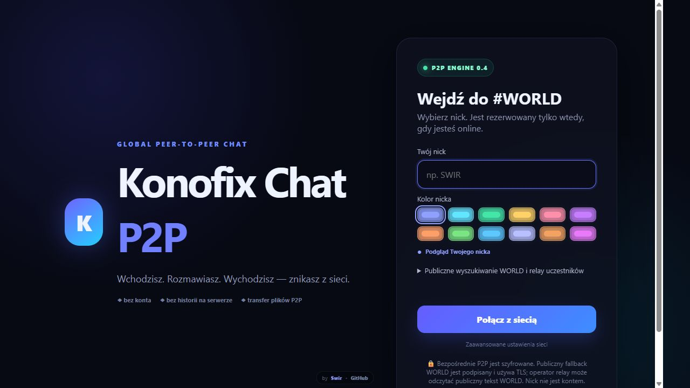

Konofix↗
Połącz się. Po swojemu.
Rozmowy, pokoje, pliki i głos w komunikatorze P2P. Twoja przestrzeń do kontaktu, bez tradycyjnego konta.
P2PWindowsRust
Poznaj projektKONOFIX / DESKTOP

SWIR / INDEPENDENT SOFTWARE LAB
Od pierwszej linii kodu po własne uniwersum. Aplikacje, silniki i narzędzia tworzone z myślą o tym, co dalej.
01 /WYBRANE TRANSMISJE
Każdy projekt to osobny świat.
Wybierz swój punkt wejścia.
Rozmowy, pokoje, pliki i głos w komunikatorze P2P. Twoja przestrzeń do kontaktu, bez tradycyjnego konta.

Natywne interfejsy w Pythonie. Reaktywne komponenty i renderowanie GPU z Rust oraz wgpu.
Poznaj projektTwórz własne światy. Silnik gier w Pythonie, rozwijany wokół 2D, 3D, multiplayer i narzędzi wizualnych.
Poznaj projektZ ciekawości powstaje pomysł. Z uporu — działający projekt. Od narzędzi na co dzień po własny silnik gier: wszystko zaczyna się od „a gdyby tak…”.
02 /ODKRYWAJ BEZ GRANIC
03 /Z KODU DO RZECZYWISTOŚCI
Kolejne wersje. Kolejne możliwości.
Sprawdź pliki i informacje o wydaniu.
Wydania z publicznych repozytoriów GitHub. Wymagania i instrukcje instalacji znajdziesz na stronie każdego wydania.
Zajrzyj na GitHub. Odkryj projekt.
Zostaw gwiazdkę, jeśli czujesz ten kierunek.